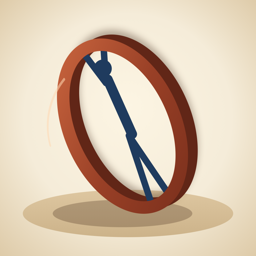

Keep the spiral alive
The Rhönrad, or German wheel, is a giant double ring that a gymnast rides from the inside. In the spiral, the wheel rolls on just one ring and circles like a spinning coin. The lower it leans, the harder it is to hold. This game is all about that move.
Tap to push off the floor. A black dot shows where the ring touches the floor. Tap when it reaches the gold mark at the front for a Perfect push. Pushing at the wrong moment shakes the wheel, and pushing against the roll slows it down.
Drag left and right to shift your weight. Keep the balance dot centered. When the wheel starts to tip, an arrow shows which way to drag.
More spin tilts the wheel lower, from the big spiral to the small spiral. Lower spirals raise your multiplier, but the wheel gets harder to balance. Watch for the « » warning: the wheel is about to wobble.
When the wheel falls, the judges score your routine. D is difficulty (how low you spun). E is execution (how steady you stayed and how well you timed your pushes).
Your first game starts with a short practice where the wheel can't fall. You can replay it any time with Practice again on the title screen.
Yes, with the speaker button on the title screen. Sound also follows your iPhone's silent switch.
A banner sits below the play area, and a full-screen ad may appear between routines, never while you are spinning.
Only on your device. It is removed if you delete the app.
ラート（ドイツ語でRhönrad）は、大きな二本の輪の中に選手が入って回る体操競技です。斜転では、輪が片方のリムだけで床を転がり、コインのように回ります。低く傾くほど難しくなります。このゲームは、その斜転だけに挑みます。
タップで床をけります。黒い点は輪が床についている場所です。点が手前の金色の印に重なったときにけると Perfect。ずれたけりは輪を揺らし、逆向きのけりは勢いを落とします。
左右にドラッグして体重移動。バランスの点を真ん中に保ちます。倒れそうになると、どちらへドラッグすればいいかが矢印で出ます。
勢いがつくほど輪は低く傾き、大斜転から小斜転へ。低いほど得点の倍率が上がりますが、揺れやすくなります。« » の印が出たら、輪が大きく揺れる合図です。
輪が倒れると、審判が演技を採点します。D＝難しさ（どれだけ低く回れたか）、E＝美しさ（ぐらつきの少なさとけるタイミング）。
最初のプレイは、倒れない練習から始まります。タイトル画面の「操作の練習」から、いつでもやり直せます。
プレイ画面の下にバナー広告、演技の合間に全画面広告が出ることがあります。回っている最中には出ません。
Last updated November 22, 2026
Rhönrad does not ask for an account and does not collect personal information such as your name, email address, contacts, photos or location.
The game shows ads through Unity Ads (Unity Technologies). Ads are requested as non-personalized, and the app never asks for permission to track you across other apps. To show and measure ads, prevent fraud and limit how often you see the same ad, Unity may receive technical information such as your device model, operating system, IP address, and how you interact with ads. See Unity's privacy policy for details.
Your best score, the practice setting and the sound setting are saved only on your device and are removed when you delete the app.
Rhönrad is not directed at children under 13.
If this policy changes, the update will be posted on this page.
本アプリはアカウント登録を求めず、氏名・メールアドレス・連絡先・写真・位置情報などの個人情報を収集しません。広告はUnity Ads（Unity Technologies）で配信し、パーソナライズしない広告として表示します。他のアプリをまたいだトラッキングの許可は求めません。広告の表示・効果測定・不正防止のため、端末の機種、OS、IPアドレス、広告の操作などの技術情報がUnityに送られる場合があります。最高記録・練習の設定・サウンド設定は端末内にのみ保存され、アプリを削除すると消えます。本アプリは13歳未満の子どもを対象としていません。
Found a bug or have an idea? Get in touch. 不具合やご意見はこちらへ。
Email support